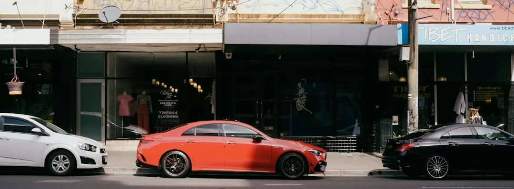

A home charger normally needs its own circuit in a garage, carport or driveway. The main quote variables are cable distance, mounting position, charger type and switchboard condition. Three-phase units can deliver 11 to 22kW, although the vehicle's onboard charger may limit the usable rate. Victorian electrical work should be documented with a Certificate of Electrical Safety, and apartment projects may also require owners corporation approval, metering and load-sharing decisions.
For homeowners comparing ev charger installation melbourne options, the practical decision is how the charger, existing electrical supply, parking position and future charging habits fit together.
Ev Charger Installation Melbourne Explained
The website published by Ev Charger Installation Melbourne describes a wall charger installed on its own circuit in a garage, carport or driveway. Before requesting a quote, record where the car normally parks and estimate the distance to the switchboard. Cable length and the wall or surface where the unit will be mounted can change the work involved.
Melbourne homes are not electrically identical. Older weatherboard and brick properties may have switchboards that need attention before a charger can be added, while newer estate homes may already have a more suitable supply. A useful first check is whether the property appears to have single-phase or three-phase power, and whether solar panels or a battery are connected.
- Note the parking location and approximate cable route.
- Photograph or describe the switchboard, main switch and breakers.
- Record any existing solar, battery or other major electrical equipment.
- Keep the charger model available if it has already been purchased.
Choose charging speed around the vehicle
A larger charger is not automatically a better fit. The published guide identifies three-phase home units in the 11 to 22kW range, but also notes that the car's onboard charger may not accept the full output. Ask for the proposed charging rate to be considered alongside the vehicle specification, the home's supply and the way the car is used overnight.
For many households, the useful comparison is between a standard universal Type 2 unit, a Tesla Wall Connector and a solar-aware charger. A vehicle-specific unit may suit an owner who already knows the car and charger model. A universal option can be more adaptable when vehicles may change. Solar-aware charging is relevant where rooftop generation is already installed and the owner wants to consider surplus daytime energy or cheaper tariff windows.
Ask the electrician to state the expected charging capability, circuit arrangement and any limits imposed by the vehicle. That gives the quote a practical basis instead of comparing charger labels alone.
Understand switchboard and Victorian paperwork
The switchboard is one of the clearest reasons two quotes for apparently similar work can differ. The job may involve a load assessment, an upgrade or load management, depending on the existing board and available supply. The appropriate answer cannot be selected from the charger name alone.
In Victoria, the electrician or Registered Electrical Contractor carrying out the work must issue a Certificate of Electrical Safety and provide a copy. The published guide also notes that some prescribed work requires an independent Licensed Electrical Inspector. Ask before work begins which certificate applies, who will issue it and when the documentation will be supplied.
Quotes should identify the charger circuit, protection, cable route, mounting work and any switchboard tasks. If an upgrade is proposed, request the reason in plain language and ask whether load management or additional protection is being considered instead. These questions help separate necessary electrical work from optional equipment choices.
Apartments, solar homes and shared parking
A detached home usually gives the owner more control over the parking location and electrical route. An apartment, townhouse or unit with a shared car park can involve additional decisions about owners corporation approval, metering and load sharing. Those matters should be raised before ordering equipment, because the preferred wall position may not be privately controlled.
Solar and battery homes need a different conversation from properties without onsite generation. The installer may need to consider how a solar-aware charger fits with the existing inverter, battery and tariff arrangement. Ask whether the proposed system can use surplus rooftop generation and how charging behaves when household demand is high.
For a broader local reference, the Melbourne home charging installation guide provides another overview of the same decision area. Use it to identify questions, then confirm the electrical details for the particular property.
Compare quotes and prepare the enquiry
A useful quote comparison puts the same facts beside each other. Check whether each version describes the charger, cable route, mounting location, switchboard condition, circuit work and certification. A lower total may simply exclude a task that another quote has included.
The enquiry form described by the provider asks for the suburb, property type, parking location and charger details if known. Those details are enough to begin a focused discussion, but a site assessment may still be needed before the final scope is settled.
- Describe the car park as a garage, carport or open driveway.
- Estimate the distance from the parking spot to the switchboard.
- State whether the supply appears single or three-phase.
- Identify existing solar, battery equipment or a charger already purchased.
- Ask for certification, switchboard work and exclusions to be shown separately.
The result should be a quote that explains what will be installed, what may need upgrading and which charging limits come from the vehicle rather than the wall unit.
- Map the parking spot. Identify the normal parking position and estimate the cable distance to the switchboard.
- Check the electrical context. Note the switchboard appearance, apparent supply type, solar panels and battery equipment.
- Select the charger direction. Choose a universal Type 2 unit, Tesla Wall Connector, solar-aware charger or advice-first option.
- Request comparable scope. Provide the property and charger details, then ask for installation, upgrades and certification to be separated.
| Situation | Questions to ask | Likely decision focus |
|---|---|---|
| Older detached home | What condition is the switchboard in? Is load management being considered? | Board capacity, protection and circuit work |
| Newer estate home | Is the existing supply suitable for the proposed unit? | Dedicated circuit and charger compatibility |
| Solar or battery property | How will the charger interact with the inverter, battery and tariff windows? | Solar-aware operation and household load |
| Apartment or townhouse | Who approves the work, and how will metering and load sharing operate? | Owners corporation, shared parking and billing |
Common questions
What usually changes the cost of a home charger installation? The published guide identifies cable run length, mounting spot, charger type and switchboard condition as the main variables. Older homes may need additional board work, while newer properties may only need a dedicated circuit.
Can a three-phase charger always deliver 22kW? No. Three-phase home chargers are described in the 11 to 22kW range, but the vehicle's onboard charger may not use the full output. The charger and car should be assessed together.
What paperwork should a Victorian homeowner receive? The electrician or Registered Electrical Contractor carrying out the work must issue a Certificate of Electrical Safety and provide a copy. Some prescribed work may also require an independent Licensed Electrical Inspector.
What should apartment owners check first? Ask about owners corporation approval, metering and load sharing before choosing equipment or a parking position. Shared car parks can require decisions that do not arise at a detached home.
This guide covers home charger selection, electrical preparation, Victorian paperwork, shared parking considerations and quote comparison.